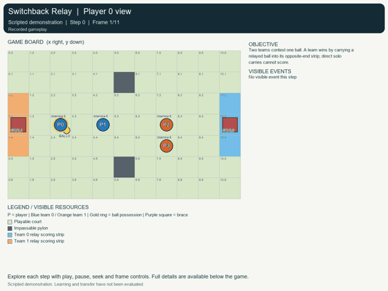
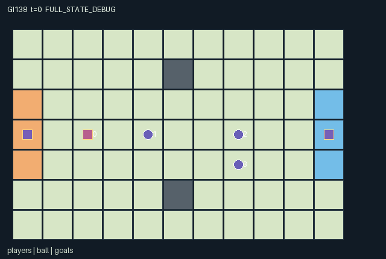

GI138 / SPATIAL
折返球接力
体力、短程实飞传球与队友接球资格连接得分机会，对手可格挡和抢断。
Original saved demonstration
Recorded native state, often authored scripts or interventions; information scope and failures are preserved in the original provenance. This is a saved demonstration, not live browser play.

Release verification episode
Untrained uniform legal actions. Actual JAX state sampled along the full original episode; full-state debug camera. No human performance or learning claim.

Run this game
crucibles play --game 138
Start Python locally, then open the address printed by the terminal. Installation, multiplayer, takeover and keyboard controls →
Objective, rewards & ending
Exact task contract
{
"objective": "Two teams contest one ball. A team wins by carrying a relayed ball into its opposite-end strip; direct solo carries cannot score.",
"natural_termination": "The first relay-qualified goal ends the match, including at t=64. Otherwise t=64 truncates.",
"interaction": "Flight interception, adjacent tackle/brace contests, shared destination conflicts and receiver positioning alter ownership, relay eligibility and scoring opportunities.",
"observation_access": "All dynamic game information is public. Every role observes the same public records plus its own id. Fixed court layout and goal strips are common knowledge; all entity visibility arrays are true."
}Declared per-step reward bounds: -1 to 1. Observability: fully_observable.
Rules
- Teams are players 0/1 versus 2/3. Carry to x=10 or x=0 at y=2..4 after a different teammate receives a pass.
- Moves cost one stamina; passes and tackles cost two; brace costs one; rest restores two, capped at six.
- A pass advances one grid cell per transition for three cells. Standing on it catches it; bracing reaches one adjacent cell.
- Moves into currently occupied cells are illegal. Shared empty-target moves are all rejected; swaps and following are blocked.
- Movement resolves before tackles, then pass flight/catches. Brace wards tackles. Catch and tackle ties use rotating initiative.
- The first qualified goal terminates; otherwise 64 steps truncate. Source and scripts are authored, not executed.
Original mechanism document (historical status wording retained)
# Switchback Relay (game-v3-00138)
**Status: AUTHORED_NOT_EXECUTED.** This is an original initial-window train-only source package. Source, scene and literal action scripts are authored hypotheses. No candidate was imported, evaluated, replayed, trained or rendered during authoring. No final-test or earlier candidate/result input was used.
Source SHA-256: `938a1d1fcfc836da5a9b15ed847840a8813efb72df90482e05d0d774157f2506`.
Native boundary: A=4, O=64, U=11, H=64; homogeneous scalar int32 actions, float32 flat observations and rewards, fixed-key int32/bool state. Declared observation interval [-1, 1], reward interval [-1, 1]. These are representation/game bounds, not empirical acceptance thresholds.
## World, interactions and exact transition order
The 11x7 court has blocking pylons at (5,1) and (5,5), with goal strips at x=10 and x=0, y=2..4. Players 0/1 form team 0 and 2/3 form team 1. The deterministic reset gives player 0 possession at (2,3), its teammate (4,3), and defenders (7,3)/(7,4). This is an explicit initial possession asymmetry, not a balanced tournament claim. The reset and raw-step keys are accepted but unused.
A player moves one orthogonal cell. The legal mask excludes borders, pylons, presently occupied cells, insufficient stamina, and pass/tackle cooldowns. A legal pair of moves can still conflict over one initially empty cell; all such movers stay. Following into a cell vacated on the same transition and swaps are not allowed. Resource cost is paid for a legal attempted move even if its shared-target conflict later rejects it. An invalid action becomes rest, including its normal recovery effect.
Movement resolves first. Eligible tackles then contest the current carrier's adjacent cell. Only opposing team members can tackle; a carrier choosing brace wards every tackle that step. Tackle ties use rank (id-t) mod 4. Successful tackle changes possession, cancels flight and clears the relay qualification. Pass/tackle attempts set a two-step cooldown; cooldown counts down on later steps. A thwarted but legally issued pass/tackle still pays its cost and cooldown.
A surviving carrier may launch north/east/south/west. The ball moves one cell immediately and up to two more cells on later transitions. A boundary/pylon stops it at its last legal cell. A player standing on an unheld ball collects it. During an unobstructed flight, a bracing player can instead catch from Manhattan distance one. The thrower cannot recatch during the flight transition. Exact-cell catches precede reach catches, then rotating rank breaks ties. An adjacent catch moves the actual ball endpoint to the catcher's cell.
A different teammate collecting the latest pass sets relay_ready. An opponent collecting that pass clears it and emits an interception. A loose ball keeps its last thrower; later collection can therefore complete a relay, while the thrower's own retrieval cannot. The receiving team's first relay-qualified carrier entering its scoring strip wins. No reward is issued for possession, a pass, a tackle or rest; the winning team gets +1 each and the other team -1 each. The first goal ends the game. Otherwise the 64-step horizon truncates.
## Why another player changes the decision
A carrier's pass removes its own ability to carry or score while creating a receiver's catch and goal opportunities and a defender's interception opportunity. The receiver can spend a stationary brace to reach the ball, move to a later catch point, or move as a decoy. A defender can race to a flight cell, brace beside it, or pressure the carrier with a tackle. A carrier facing an adjacent tackler can brace, pass, or move if the destination is free; the opponent's choice changes which response preserves possession.
A short relay followed by carrying reduces exposure to interceptions but costs receiver positioning and rests. Repeated forward passes can cover space without the receiver's movement cost, at the price of telegraphed flight lanes and cooldown. Waiting and bracing provide different payoffs: rest restores stamina but does not intercept adjacent flight or ward a tackle. These are prospective strategic alternatives, not evidence that policies learn them.
The per-role view is fully public except for its identifying row. Ball ownership, remaining flight, last thrower and relay flag are directly observed, so renderer highlights cannot add a hidden competitive advantage. Goal events are per-transition flags; score is a cumulative counter. The ball is a real object both while airborne and at a carrier endpoint.
## Declared invariants and boundedness
- Exactly one ball exists. At most one carrying flag is true; it agrees with ball_owner, and a held ball shares that player's position.
- Active player cells remain distinct and lie within x=0..10, y=0..6, excluding pylons. All object endpoints remain inside the same rectangle.
- Stamina stays in 0..6, cooldown in 0..2, flight remaining in 0..3. Team ids remain [0,0,1,1].
- A flight has no carrier. A stopped or caught ball has zero flight direction. last_thrower is -1 or a valid player id; ball_owner is -1 or a valid player id.
- Scores remain zero or one because the first goal absorbs; the terminal reward is zero-sum across the two teams.
- These are source declarations for later sealed checks. No runtime invariant verification or optimal strategy claim is supplied.
Potential rule variations include a mirrored initial possession, shifted pylons, pass reach, rest recovery, or alternate team assignments. Each changes routing, interception or coordination demands and would require a new source identity and prospective protocol. None is silently randomized or implemented here.
## Exact action legend
- 0: Rest: recover two stamina.
- 1: Move north.
- 2: Move east.
- 3: Move south.
- 4: Move west.
- 5: Pass north: range three.
- 6: Pass east: range three.
- 7: Pass south: range three.
- 8: Pass west: range three.
- 9: Tackle adjacent opposing carrier.
- 10: Brace: ward tackles and reach one cell for catches.
## Native observation columns
- [0:1), public: Clock t/64.
- [1:2), self: Observer id/4.
- [2:30), public: Four player records in id order, stride 7: x/16,y/16,stamina/8,cooldown/4,bracing,carrying,team.
- [30:38), public: Ball record: x/16,y/16,(owner+1)/4,dx,dy,remaining/4,(last_thrower+1)/4,relay_ready.
- [38:40), public: Team 0 and team 1 score.
- [40:62), public: Per-transition flags: pass[4],catch[4],interception[4],tackle[4],collision[4],score[2].
- [62:64), padding: Two constant zeros.
The renderer binds only these real state groups, positions, active masks and role visibility masks. Glyphs and inert colors carry no extra rule. A carried object shares the actual carrier endpoint; flight, growth, support changes, leases and service are real state transitions. Frame interpolation is presentation only and must not invent a catch, handoff, crossing or private observation. Debug/full-state view must remain separately labeled.
## Authored paired interventions
The complete literal integer vectors, including every prefix step, are saved in playthrough.json. These are not observed trajectories or guaranteed successful solutions.
**receiver_reach_changes_opponent_opportunity**
Only player 1 changes its first branch action. A should receive at (4,2), enabling team 0 relay scoring; B should let the ball continue to opposing player 2 at (5,3). Untested source hypothesis.
Prefix (1 joint steps): `[[6,1,4,0]]`.
Branch A suffix: `[[0,10,4,0],[0,0,0,0]]`.
Branch B suffix: `[[0,0,4,0],[0,0,0,0]]`.
**carrier_brace_wards_other_player_tackle**
Only current carrier 2 braces in B. Player 1 attempts the same adjacent tackle; A should transfer possession and B should retain it. Untested source hypothesis.
Prefix (4 joint steps): `[[6,1,4,0],[0,0,4,0],[0,0,0,0],[0,3,0,0]]`.
Branch A suffix: `[[0,9,0,0]]`.
Branch B suffix: `[[0,9,10,0]]`.
## Raw terminal and boundary semantics
A live raw step advances t once. Natural termination takes priority over the horizon: truncated=(next_t>=H) and not terminated; episode_done=terminated or truncated. raw_step uses an absorbing branch for an already completed state: every leaf and observation remain unchanged, reward is zero, all per-agent dones stay true, and terminal causes are preserved. No reset occurs in raw_step. A later trusted wrapper may reset outside it; an absorbing call is not a new learning transition or a new occurrence of the preserved last-transition event flags.
Invalid/out-of-range commands deterministically become action 0. Every role always has action 0. All small signed codes, clocks, indices and inventories use int32; masks and terminal causes use bool. The externally supplied uint32 reset key is not duplicated in the state. Scaling uses powers of two. This design choice is not a numeric-parity result.
The required community adapter remains a separate implementation-layer deliverable: map native array row i to agent_i in action/observation/reward/done dictionaries and map info.done_all to __all__, preserving these masks, role observations, raw terminal causes and inactive-role semantics. This six-file author package neither implements that adapter nor silently replaces a frozen learner.
## Literal source evidence
- `reset`: candidate.py lines 15-52.
- `legal_actions`: candidate.py lines 54-67.
- `advance`: candidate.py lines 69-163.
- `observe`: candidate.py lines 165-180.
- `raw_step`: candidate.py lines 182-189.
Native movement occupancy bound — candidate.py line 60:
```python
occupied = jnp.any(jnp.all(q[:, :, None, :] == p[None, None, :, :], axis=3), axis=2)
```
Finite shared stamina tradeoff — candidate.py line 86:
```python
cost = moving.astype(jnp.int32) + 2 * throwing.astype(jnp.int32) + 2 * tackling.astype(jnp.int32) + bracing.astype(jnp.int32)
```
Opposing tackle depends on the carrier brace — candidate.py line 94:
```python
tackle_ok = tackling & near_owner & (state["team"] != state["team"][owner_index]) & (owner >= 0) & ~bracing[owner_index]
```
Physical ball flight — candidate.py line 114:
```python
next_ball = ball + direction
```
Receiver reach changes a moving pass — candidate.py line 122:
```python
catch_ok = (owner < 0) & ((distance == 0) | (in_flight & ~blocked & bracing & (distance == 1)))
```
Cross-agent relay qualification — candidate.py line 127:
```python
relay_catch = caught & (last >= 0) & (catcher != last) & (state["team"][catcher] == state["team"][jnp.maximum(last, 0)])
```
Spatial goal depends on prior teammate reception — candidate.py line 135:
```python
scored = (owner >= 0) & relay & (ball[0] == scoring_x) & (ball[1] >= 2) & (ball[1] <= 4)
```
Raw natural priority — candidate.py line 139:
```python
truncated = (nt >= self.max_steps) & ~terminated
```
Absorbing state is returned without reset — candidate.py line 185:
```python
lambda s, a: (s, jnp.zeros((4,), dtype=jnp.float32)),
```
## Reference use and provenance
All game rules and kernel expressions were authored for this assigned design; no upstream game, board implementation, model weights or learner code was copied. The allowed reference snapshots were read as inspiration and interface context. Their exact identities are also recorded in generation_record.json.
- JaxMARL supplies the community parallel, agent-keyed API model and the idea of distinct environment/algorithm components. Its example game rules were not copied.
- Pgx supplies explicit-key, legal-mask and state/visualization API context for discrete games. It is a board-game environment library, not this spatial game's implementation.
- Craftax supplies inspiration for stateful spatial inventory and persistent world consequences. The assigned rules are independent of Craftax's game mechanics.
- PureJaxRL is an end-to-end algorithm implementation reference. Craftax_Baselines/ppo_rnn.py is recurrent PPO integration code and credits Chris Lu/PureJaxRL. Neither is treated as a new game library or substituted for the experiment's learner.
- `references\JaxMARL_README.md`; SHA-256 `6649d04f5ed05d620e78e8416a00d4db841cf2633ae60fdb3c9729e037a71c15`; source: https://github.com/bold-lab-ai/JaxMARL/blob/main/README.md.
- `references\Pgx_README.md`; SHA-256 `153f44999e55d5df3e51e13dee6ef418cc9704ddfa26206f1dc5789b9cbbf8df`; source: https://github.com/sotetsuk/pgx/blob/main/README.md.
- `references\PureJaxRL_README.md`; SHA-256 `d5f40182c924a42cec820931e61a7d5070e48c4c8413c7d16455abc6ea0ef6b0`; source: https://github.com/luchris429/purejaxrl/blob/main/README.md.
- `references\Craftax_Baselines_ppo_rnn.py`; SHA-256 `5f93e6a7c3a1e0c551831d75be311735ba495dfdecae51787a1c03a27b1cd011`; source: https://github.com/MichaelTMatthews/Craftax_Baselines/blob/main/ppo_rnn.py.
- `references\Craftax_README.md`; SHA-256 `7f9757a2047143cf183f7e2e84851a740f386af80dbee050c89b316d66a3d3ff`; source: https://github.com/MichaelTMatthews/Craftax/blob/main/README.md.
Only this batch's sanitized requests/designs/contracts and the five supplied snapshots were inputs. Shared input bytes were not modified. Local AST/data checks do not establish successful JAX execution, eager/JIT/vmap parity, legal-script replay, balance, learnability, strategic richness, non-isomorphism, adaptation or meta-RL transfer. Actual replay, animation, community adapter behavior and scientific evidence require the separately authorized execution and review stages.
Commands
Roles & abilities
agent_0 team_0 carrier/runner
agent_1 team_0 receiver/runner
agent_2 team_1 interceptor/runner
agent_3 team_1 interceptor/runner
Observation permissions
Training receives only the original observation rows. Role cameras use declared visibility; debug cameras are explicitly marked. Local benchmark records log debug exposure and role takeover history.
Exact observation layout
[
{
"slice": [
0,
1
],
"meaning": "Clock t/64",
"visibility": "public"
},
{
"slice": [
1,
2
],
"meaning": "Observer id/4",
"visibility": "self"
},
{
"slice": [
2,
30
],
"meaning": "Four player records in id order, stride 7: x/16,y/16,stamina/8,cooldown/4,bracing,carrying,team",
"visibility": "public"
},
{
"slice": [
30,
38
],
"meaning": "Ball record: x/16,y/16,(owner+1)/4,dx,dy,remaining/4,(last_thrower+1)/4,relay_ready",
"visibility": "public"
},
{
"slice": [
38,
40
],
"meaning": "Team 0 and team 1 score",
"visibility": "public"
},
{
"slice": [
40,
62
],
"meaning": "Per-transition flags: pass[4],catch[4],interception[4],tackle[4],collision[4],score[2]",
"visibility": "public"
},
{
"slice": [
62,
64
],
"meaning": "Two constant zeros",
"visibility": "padding"
}
]Entity visibility & attributes
[
{
"id": "players",
"kind": "agent",
"count": 4,
"position": [
"agent_pos"
],
"active": [
"agent_active"
],
"visibility": [
"agent_visibility"
],
"attributes": [
{
"state_path": [
"team"
],
"meaning": "Team 0 or 1",
"display": "category"
},
{
"state_path": [
"stamina"
],
"meaning": "Stamina 0..6",
"display": "bar"
},
{
"state_path": [
"cooldown"
],
"meaning": "Pass/tackle cooldown in steps",
"display": "number"
},
{
"state_path": [
"bracing"
],
"meaning": "Brace used on the last transition",
"display": "flag"
},
{
"state_path": [
"carrying"
],
"meaning": "Currently holds the ball",
"display": "flag"
}
]
},
{
"id": "ball",
"kind": "object",
"count": 1,
"position": [
"ball_pos"
],
"active": [
"ball_active"
],
"visibility": [
"ball_visibility"
],
"attributes": [
{
"state_path": [
"ball_owner"
],
"meaning": "Carrier id; -1 means unheld",
"display": "category"
},
{
"state_path": [
"flight_dir"
],
"meaning": "Actual current flight direction [dx,dy]",
"display": "direction"
},
{
"state_path": [
"flight_remaining"
],
"meaning": "Remaining flight advances",
"display": "number"
},
{
"state_path": [
"last_thrower"
],
"meaning": "Last passer id; -1 after tackle or before first pass",
"display": "category"
},
{
"state_path": [
"relay_ready"
],
"meaning": "A different teammate received the latest pass",
"display": "flag"
}
]
},
{
"id": "goals",
"kind": "landmark",
"count": 2,
"position": [
"goal_pos"
],
"active": [
"goal_active"
],
"visibility": [
"goal_visibility"
],
"attributes": [
{
"state_path": [
"score"
],
"meaning": "Goals by the corresponding team",
"display": "number"
}
]
}
]Actual verification & provenance
Per-game execution receipt
{
"game": "gi138",
"status": "PASS",
"verification_revision": 2,
"source_sha256": "938a1d1fcfc836da5a9b15ed847840a8813efb72df90482e05d0d774157f2506",
"seed": 20261101,
"runtime": {
"jax": "0.4.38",
"numpy": "1.26.4",
"devices": [
"TFRT_CPU_0"
]
},
"dimensions": {
"num_agents": 4,
"observation_size": 64,
"num_actions": 11,
"max_steps": 64
},
"checks": {
"eager_reset": {
"status": "PASS",
"seconds": 1.0058269500732422
},
"observation_spaces_legal_masks": {
"status": "PASS",
"seconds": 0.7751643657684326
},
"eager_step": {
"status": "PASS",
"seconds": 0.479245662689209
},
"jit_reset": {
"status": "PASS",
"seconds": 0.06255912780761719
},
"jit_step": {
"status": "PASS",
"seconds": 0.5747504234313965
},
"eager_jit_integer_parity_float_measurement": {
"status": "PASS",
"seconds": 0.0010001659393310547
},
"jit_vmap_reset": {
"status": "PASS",
"seconds": 0.08822393417358398
},
"jit_vmap_step": {
"status": "PASS",
"seconds": 0.603325605392456
},
"outer_autoreset_api": {
"status": "PASS",
"seconds": 0.625220775604248
},
"full_original_horizon_episode_and_render": {
"status": "PASS",
"seconds": 0.9468131065368652
}
},
"human_scores": null,
"browser_controls": "PENDING",
"failures": [],
"elapsed_seconds": 5.681502819061279,
"float_parity_max_abs": 0.0,
"numerical_parity": "EXACT",
"raw_terminal_absorbing": "PASS",
"terminal_outer_reset": "PASS",
"episode_steps": 64,
"scripted_random_returns": [
0.0,
0.0,
0.0,
0.0
],
"terminal": true,
"demo_information": "FULL_STATE_DEBUG",
"demo_frames": 33,
"render_roles_checked": 4
}Chromium control verification
{
"game": "gi138",
"status": "PASS",
"human_scores": null,
"engineering": true,
"checks": [
"catalog_selected_and_real_native_reset",
"keyboard_native_direction_command",
"dom_queue_and_native_step",
"second_participant_ownership_and_native_joint_step",
"all_roles_individually_controllable_no_role_cap",
"explicit_debug_camera",
"release_to_pure_ai_without_reset",
"close_session_preserves_log"
],
"ui_sha256": "96243f9de144b80b5e20a114330e2206bdcd58d3efc9c6f13bbc08b95cacc14d",
"keyboard_action_id": 1,
"seconds": 4.341870069503784
}Original identity and file hashes
{
"id": 138,
"key": "gi138",
"title": "折返球接力",
"summary": "体力、短程实飞传球与队友接球资格连接得分机会，对手可格挡和抢断。",
"tags": [
"团队球赛",
"传球配合"
],
"family": "spatial",
"dimensions": {
"num_agents": 4,
"observation_size": 64,
"num_actions": 11,
"max_steps": 64
},
"source_sha256": "938a1d1fcfc836da5a9b15ed847840a8813efb72df90482e05d0d774157f2506",
"manifest_sha256": "f4a5fba4bf90aa0c057d4e04d26911960749ebb8b357da20a3af2a08e9c8d8c7",
"files": [
{
"file": "candidate.py",
"sha256": "938a1d1fcfc836da5a9b15ed847840a8813efb72df90482e05d0d774157f2506",
"bytes": 10835,
"origin": "work/exp_2/game_incubator_v3/community_games222_225_visualization_root222_v1/native154_candidate/registry/v2/games/game-v3-00138/candidate.py"
},
{
"file": "manifest.json",
"sha256": "f4a5fba4bf90aa0c057d4e04d26911960749ebb8b357da20a3af2a08e9c8d8c7",
"bytes": 12797,
"origin": "work/exp_2/game_incubator_v3/community_games222_225_visualization_root222_v1/native154_candidate/registry/v2/games/game-v3-00138/manifest.json"
},
{
"file": "scene.json",
"sha256": "7f778af2ec3e18a84b434a0bde276e0722d077a6ac1e352bea65f81b56de8bdc",
"bytes": 6972,
"origin": "work/exp_2/game_incubator_v3/community_games222_225_visualization_root222_v1/native154_candidate/registry/v2/games/game-v3-00138/scene.json"
},
{
"file": "mechanism.md",
"sha256": "a91bc39ac3fc6081221d8f48719f08902db250c5d7f48181164285c5aeed5386",
"bytes": 13502,
"origin": "work/exp_2/game_incubator_v3/sources/game-v3-00138/attempt_00/mechanism.md"
},
{
"file": "playthrough.json",
"sha256": "f30e5793c0d4b9d130c843df5af4ce86936bca0cbca6eb6a451d87a7b5b1c90e",
"bytes": 3977,
"origin": "work/exp_2/game_incubator_v3/sources/game-v3-00138/attempt_00/playthrough.json"
}
],
"original_status": "NATIVE154_REFERENCE",
"original_saved_replay": true,
"release_validation": "PASS",
"human_scores": null,
"browser_validation": "PASS"
}